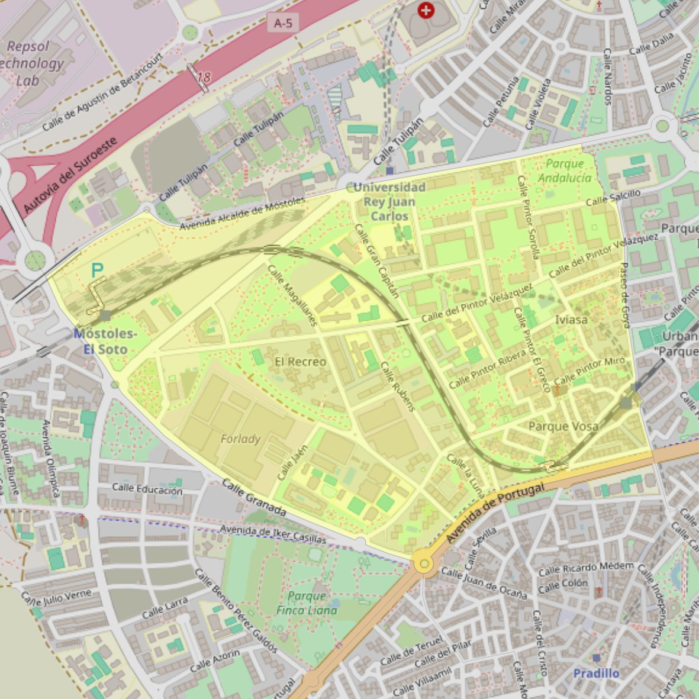

Nuestra Señora de la Consolación

- Arciprestazgo
- Móstoles
- Población
- Móstoles
- Dirección postal
- c/ del Pintor Miró, 3
- Código postal
- 28933
- Extensión
- 1,49 km² (149 ha)
- Teléfono
- 912 268 720
- Correo electrónico
- nsconsolancion-mostoles@diocesisgetafe.es